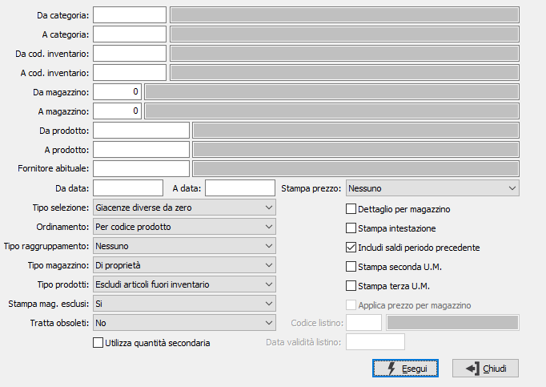

Situazione giacenze di magazzino

DA CATEGORIA: eventuale codice della categoria merceologica da cui si vuole iniziare la selezione di analisi. Sul campo è attiva la ricerca (F9) sulla tabella Categorie merceologiche.
A CATEGORIA: eventuale codice della categoria merceologica con cui si vuole concludere la selezione di analisi. Sul campo è attiva la ricerca (F9) sulla tabella Categorie merceologiche.
DA COD. INVENTARIO: eventuale codice Inventario da cui si vuole iniziare la selezione di analisi. Sul campo è attiva la ricerca (F9) sulla tabella Codici inventario.
A COD. INVENTARIO: eventuale codice Inventario con cui vi vuole concludere la selezione di analisi. Sul campo è attiva la ricerca (F9) sulla tabella Codici inventario.
DA MAGAZZINO: eventuale codice del magazzino da cui si vuole iniziare la selezione di analisi. Confermando a vuoto, l’analisi inizia dal primo magazzino valido. Sul campo è attiva la ricerca (F9) F9 sulla tabella Magazzini.
A MAGAZZINO: eventuale codice del magazzino con cui si vuole concludere la selezione di analisi. Confermando a vuoto, l’analisi termina con l’ultimo magazzino valido. Sul campo è attiva la ricerca (F9) sulla tabella Magazzini.
DA PRODOTTO: eventuale codice dell'articolo, presente in anagrafica Prodotti, da cui si desidera iniziare la selezione dei movimenti di magazzino. Confermando a vuoto, la selezione inizia con il primo prodotto valido. Sul campo è attiva la ricerca (F9) sull’anagrafica prodotti.
A PRODOTTO: eventuale codice dell'articolo, presente in anagrafica Prodotti, a cui si desidera terminare la selezione dei movimenti di magazzino. Confermando a vuoto, la selezione termina con l’ultimo valido. Sul campo è attiva la ricerca (F9) sull’anagrafica prodotti.
FORNITORE ABITUALE: eventuale codice del fornitore abituale dei prodotti con cui si desidera effettuare la selezione dei prodotti. Sul campo è attiva la ricerca (F9) sull’anagrafica fornitori.
DA DATA: eventuale data da cui deve iniziare l’analisi dei movimenti di magazzino per gli articoli precedentemente selezionati. Confermando a vuoto, l’analisi inizia con il primo movimento valido.
A DATA: eventuale data con cui si desidera terminare l’analisi dei movimenti di magazzino per gli articoli precedentemente selezionati. Confermando a vuoto, l’analisi si conclude con l'ultimo movimento valido.
TIPO SELEZIONE: combo box per definire il tipo di esistenze da considerare. Valori ammessi: Tutti; Giacenze diverse da zero; Giacenze negative; Sottoscorta.
ORDINAMENTO PER: combo box per definire i criteri di ordinamento. Valori ammessi: Per prodotto; Per Magazzino.
TIPO RAGGRUPPAMENTO: combo box per l’attivazione di eventuali raggruppamenti. Valori ammessi: Nessuno; per Categoria Merceologica: per Codice Inventario.
TIPO MAGAZZINI: combo box per definire il criterio di selezione dei magazzini. Valori ammessi: Nessuna; Di proprietà; Di terzi.
TIPO PRODOTTI: combo box per definire la tipologia dei prodotti da elaborare. Valori ammessi: tutti, escluso prodotti fuori inventario, solo prodotti fuori inventario.
STAMPA MAGAZZINI ESCLUSI: indica se nella selezione si desidera i magazzini normalmente esclusi dalla stampa dell’inventario. Valori ammessi: No, Si, Solo esclusi.
TRATTA OBSOLETI: definisce come se includere nell'analisi anche gli articoli obsoleti: Si, No, Solo obsoleti.
VISUALIZZA QUANTITA' SECONDARIA: definisce se visualizzare la giacenza di magazzino nella seconda unità di misura dell'articolo.
TRATTA PREZZO: consente di stampare prezzo e valore dei prodotti trattati; è possibile selezionare diversi criteri: nessun prezzo, prezzo medio di carico, costo ultimo ecc.
DETTAGLIO MAGAZZINI: check box per definire i criteri di visualizzazione in caso di presenza in più magazzini dello stesso prodotto. Valori ammessi: vuoto = visualizza il totale dei magazzini; spunta = visualizza analiticamente i singoli magazzini.
STAMPA INTESTAZIONE: Indica se stampare una pagina con i criteri di selezione della stampa, l’operatore che l’ ha eseguita, la data e l’ora (casella con segno di spunta).
INCLUDI SALDI PERIODO PRECEDENTE: definisce se stampare anche i saldi relativi al periodo precedente alla data di inizio elaborazione (casella con segno di spunta).
STAMPA SECONDA UM: definisce se stampare le quantità anche nella seconda unità di misura (casella con segno di spunta).
STAMPA TERZA UM: definisce se stampare le quantità anche nella terza unità di misura (casella con segno di spunta).
APPLICA PREZZO PER MAGAZZINO: attivo solo se si imposta il prezzo medio o costo ultimo nella casella "Tratta prezzo" e si attiva la stampa del dettaglio di magazzino: il prezzo in oggetto viene calcolato sul singolo magazzino e non generico per prodotto (casella con segno di spunta). In mancanza del prezzo medio/costo ultimo verrà utilizzato il prezzo medio/costo ultimo complessivo dell'articolo.
CODICE LISTINO: attivo solo se si imposta il prezzo di listino nella casella "Tratta prezzo", indica il codice del listino, presente sulla tabella Listini, da utilizzare per valorizzare i prodotti. Sul campo sono attive le funzioni di ricerca (F9).
DATA VALIDITÀ LISTINO: attivo solo se si imposta il prezzo di listino nella casella "Tratta prezzo", indica la data da utilizzare per leggere il prezzo dal listino indicato in precedenza.